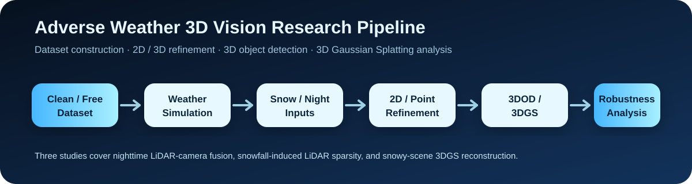
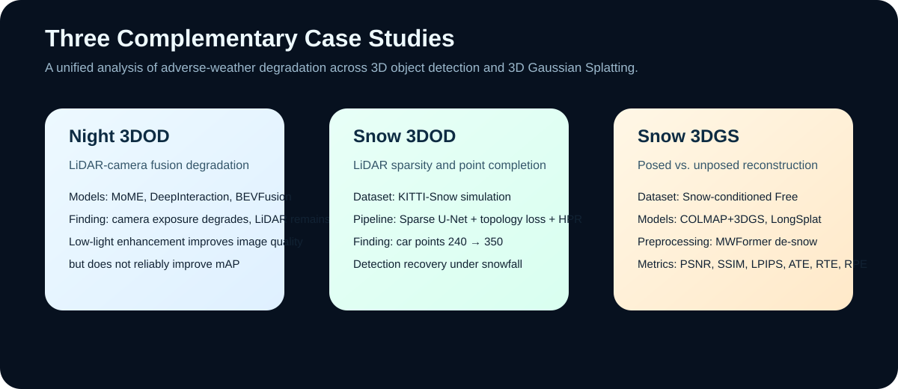

Study 01
Nighttime 3D Object Detection
nuScenes 야간 장면을 대상으로 MoME, DeepInteraction, BEVFusion의 LiDAR-camera fusion 성능을 분석합니다. LiDAR 포인트 품질은 상대적으로 안정적인 반면, 카메라의 노출 부족이 성능 저하와 강하게 연결됨을 확인했습니다.
눈, 야간 등 악천후 환경에서 3D Object Detection과 3D Gaussian Splatting의 성능 저하 원인을 분석하고, 입력 데이터 전처리와 포인트 복원을 통해 자율주행·로보틱스 인지 시스템의 강건성을 높이는 연구입니다.

기존 3D Vision 모델은 대부분 맑은 날씨 데이터셋을 중심으로 학습되어, 야간·강설과 같은 실제 주행 악조건에서 입력 모달리티의 품질 저하와 도메인 변화로 인해 성능이 크게 감소합니다. 본 프로젝트는 세 가지 케이스 스터디를 통해 악천후 조건에서의 3D 인지 성능 저하 원인을 정량적으로 분석합니다.
세 연구는 서로 다른 악천후 조건과 3D Vision 태스크를 다루지만, 공통적으로 “입력 데이터의 어떤 변화가 3D 인지 성능을 떨어뜨리는가?”라는 질문을 중심으로 연결됩니다.

nuScenes 야간 장면을 대상으로 MoME, DeepInteraction, BEVFusion의 LiDAR-camera fusion 성능을 분석합니다. LiDAR 포인트 품질은 상대적으로 안정적인 반면, 카메라의 노출 부족이 성능 저하와 강하게 연결됨을 확인했습니다.
KITTI에 물리 기반 강설 시뮬레이션을 적용해 KITTI-Snow를 구축하고, 강설로 인한 LiDAR 포인트 희소화가 객체 탐지 성능을 떨어뜨리는 핵심 원인임을 분석합니다.
Snow-conditioned Free 데이터셋을 구성하고, 일반 3DGS와 LongSplat을 비교하여 강설 아티팩트와 2D de-snow 전처리가 렌더링 품질 및 카메라 포즈 추정에 미치는 영향을 분석합니다.
프로젝트 전체 흐름은 악천후 데이터 생성, 전처리/복원, 3D 인지 모델 실행, 정량평가 순서로 구성됩니다.
아래 표는 업로드된 3개 논문의 핵심 결과를 웹페이지용으로 압축한 것입니다. 최종 제출 전 실제 논문 PDF의 표 번호와 수치를 다시 한 번 대조하세요.
저조도 개선 기법은 평균 밝기와 노출 부족 비율을 개선했지만, 3D 객체 탐지 mAP는 정체되거나 하락했습니다. 이는 사람 눈에 좋은 영상이 곧바로 기계 인지 성능 향상으로 이어지지 않음을 보여줍니다.
| Metric / Model | Original | CLAHE | EnlightenGAN | Zero-DCE++ |
|---|---|---|---|---|
| Mean Brightness ↑ | 35.59 | 58.04 | 117.88 | 100.54 |
| Low-light Pixel Ratio ↓ | 0.47 | 0.17 | 0.00 | 0.03 |
| MoME mAP ↑ | 0.3742 | 0.3685 | 0.3742 | 0.3742 |
| DeepInteraction mAP ↑ | 0.3744 | 0.3534 | 0.3748 | 0.3492 |
| BEVFusion mAP ↑ | 0.3546 | 0.3359 | 0.3548 | 0.3189 |
강설 환경에서는 LiDAR 포인트가 희소해지며, 특히 자동차와 자전거 클래스에서 AP 감소가 크게 나타났습니다. 제안한 포인트 복원 파이프라인은 자동차 포인트 수를 240.46개에서 350.39개로 증가시켰습니다.
| Dataset | Pedestrian Avg. Points | Cyclist Avg. Points | Car Avg. Points |
|---|---|---|---|
| KITTI | 209.89 | 164.58 | 499.93 |
| KITTI-Snow | 193.26 | 135.17 | 240.46 |
| KITTI-Snow w/ Ours | 265.66 | 186.22 | 350.39 |
일반 3DGS는 전체적으로 LongSplat보다 높은 렌더링 품질을 보였고, de-snow 전처리 후 복원 품질이 회복되었습니다. 다만 프레임 단위 2D 전처리는 시점 간 일관성 문제를 완전히 해결하지 못할 수 있습니다.
| Pipeline | Condition | PSNR ↑ | SSIM ↑ | LPIPS ↓ |
|---|---|---|---|---|
| 3DGS | Clean | 36.796 | 0.969 | 0.030 |
| 3DGS | Snow | 23.845 | 0.835 | 0.207 |
| 3DGS | De-snow | 28.493 | 0.909 | 0.111 |
| LongSplat | Clean | 25.842 | 0.717 | 0.239 |
| LongSplat | Snow | 21.307 | 0.597 | 0.369 |
| LongSplat | De-snow | 23.881 | 0.670 | 0.314 |
3DGS Snow 파이프라인 중 SW 등록 대상으로 분리 가능한 범위는 “MWFormer 모델 자체”가 아니라, 이미 정렬된 snow image folder를 입력받아 MWFormer를 자동 실행하고 LongSplat / COLMAP+3DGS 입력 구조로 정리하는 wrapper 소프트웨어입니다.
python tools/run_refinement.py \
--input_dir data/snow/grass/input \
--output_dir data/de_snow/grass/input \
--model mwformer \
--mwformer_repo external/MWFormer \
--weight_path weights/MWFormer/backbone.pth \
--config configs/refinement.yaml본 페이지는 기존 GitHub 레포지토리의 연구 구조를 보여주는 프로젝트 소개 페이지입니다. 실제 코드와 실험 자료는 각 파트 폴더에 정리합니다.
KNUVI_Capstone_Project_2026-1/
├── 3DGS_Part/
├── 3DOD_RAIN&NIGHT_Part/
├── 3DOD_SNOW_Part/
├── Meeting_Note/
├── Presentation/
├── SW_registration/
│ └── snow_refinement_pipeline/
└── docs/
├── index.html
├── .nojekyll
└── assets/Night 3DOD. 야간 환경에서의 멀티모달 기반 3D 객체 탐지 모델의 성능 저하 사례 연구.
Snow 3DOD. 강설 환경에서의 3D 객체 탐지 성능 저하와 포인트 희소성 복원 연구.
Snow 3DGS. 다양한 포즈 추정 환경 3D Gaussian Splatting의 강설 환경 강건성 및 2차원 전처리 효과 사례 연구.
Project repository. capstone-design-2-team3/KNUVI_Capstone_Project_2026-1.